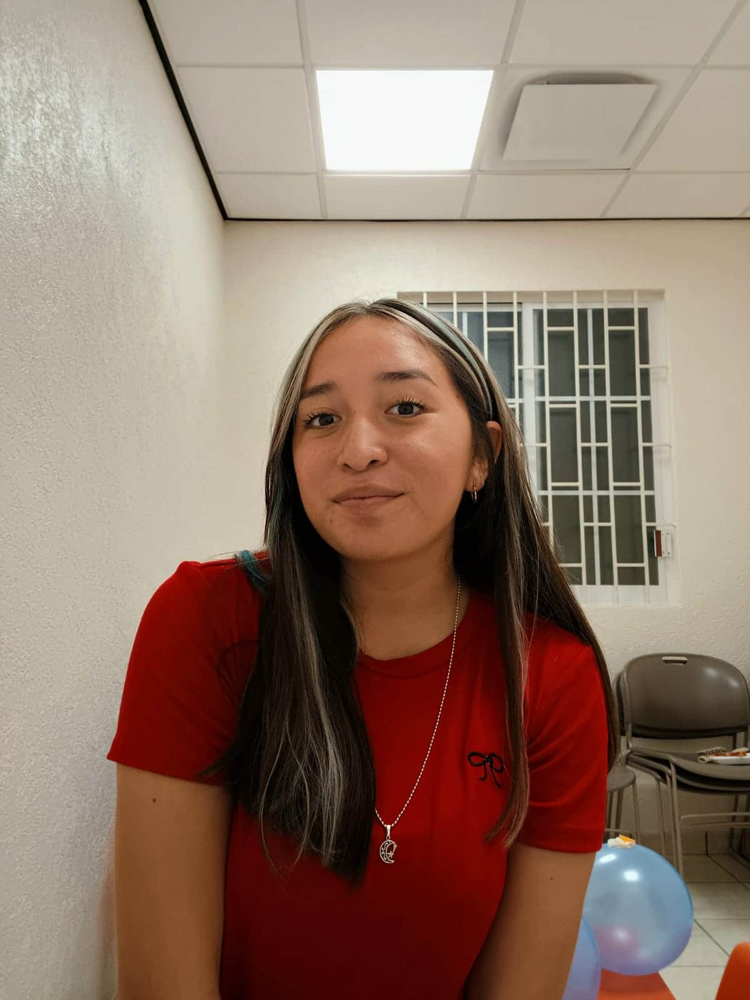

Angelica Sulub
About me

My name is Angelica Sulub. I am from Yucatan, Mexico, and I am excited to be part of the WDD 131 course. I am passionate about web development and eager to learn new skills in this field. I like to explore different technologies and stay updated with the latest trends in web development.
Yucatan, Mexico

Yucatan is a beautiful region in Mexico known for its rich history, culture, and natural beauty. It is home to ancient Mayan ruins, stunning beaches, and vibrant cities. I am proud to be from Yucatan. An interesting fact about Yucatán is that when it sought to gain independence from Mexico, it created its own flag, and this flag was approved for use in 2024.